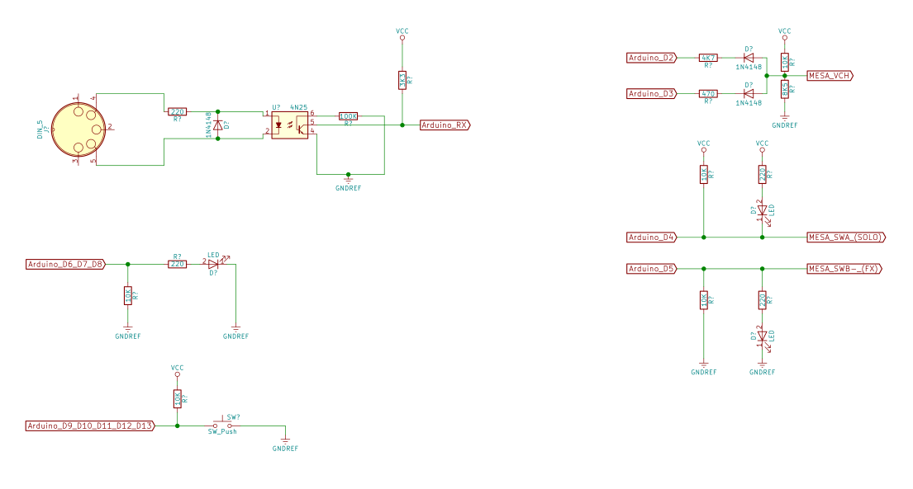

HappySwitch - Open Source MIDI Amp Controller
HappySwitch gives a MIDI input to your legacy guitar or bass amp
With HappySwitch you can control your midiless guitar or bass amp through any MIDI devices. Stop dancing on your pedals and bring your live performance to the next level with HappySwitch!
If you enjoy it, please leave a tip (Bitcoin): 1G26HGi9wrFPSGkDGcw7Y9cbAgZ51t5cwR
About
HappySwitch receives the MIDI Program Change messages and applies the stored config to your amp.
This prototype was expecially developed to work with MESA/Boogie® Dual & Triple Rectifier™ which have a proprietary footswitch interface (7 DIN) but, you can hack it to control every amp with a standard footswitch 1/4" jack interfaces.
Project status
This is a fully working Proof Of Concept based on Arduino. You can build it to use it as it is in your set-up, you can expand it by adding features, you can hack it to work with your specific devices or you can play with it just for fun.
All these stuff is released with a GPL v3 license so you can feel free to use and modify it.
Howto use HappySwitch
Connect the MIDI OUT of your multi-effect/footswitch to the MIDI IN of the HappySwitch and use the other port (7/8 DIN) to connect your MESA amp.
Select a patch on your multi-effect and use the switches on HappySwitch to setup your amp. The HappySwitch stores your changes immediately.
Do the same steps for all your patch, HappySwitch will remember your setup!
MESA/Boogie Dual & Triple Rectifier 7 DIN interface - BigFoot™ emulator
Bigfoot footswitch use the non standard and undocumented interface exposed on 7 pin DIN 270° connector (you can use 8 pin DIN leaving 8th not connected):
- PIN 1: GND
- PIN 2: Vcc 5V
- PIN 3: V-CH
- PIN 4: SWB-
- PIN 5: SWA
- PIN 6: CH0
- PIN 7: SWB+
- PIN 8: N.C.
- SWA (pin 5) rules the SOLO switch. This pin is 0V when the SOLO gain is ON, and 5V when the SOLO is OFF
- SWB+ and SWB- (pin 7 and 4) are connected together (I don't know how MESA has called this "+" and "-") and it controls the FX switch: 0V FX is OFF, 5V FX is ON
- V-CH is the only one pin that controls the three channels of the Amps. V-CH at 0,7V meaning CH1 (Channel 1) selected, 1,25V meaning CH2, 1,90V meaning CH3
- Vcc (pin 2) provide the power to the BigFoot, so it's is perfect to use to power the arduino too
MIDI interfaces
MIDI (Musical Instrument Digital Interface) is an asynchronous serial interface used from 1980 to
control the music instruments.
It runs at 31250 bps in 8-N-1 format (1 low start bit, 8 data bits, 1 high stop bit) and at phisical
layer it uses a pair ow wires cabled into a 5-pin 180° DIN connector (only 4 and 5 pins are used).
At the protocol level, MIDI has 16 channel used to spearate "voices" or "instruments". The ability
to multiplex 16 channels onto a single wire makes it possible to control 16 different instruments
or devices.
The common type of message are:
- Note ON: used to play a note
- Note OFF: used to stop a note
- Pitch-bend: used to pitch the note by + or - 2 semitones
- Aftertouch: indicate a pressure changes ont he note while it is being played
- Control Change: generated using knobs, slider, footswitches
- Program Change: instruct an instrument to recall another patch or program
- SysEx: are defined by the manufacturer and are used to send non-MIDI data such as memory dump, sound samples, ecc
- RrsEx: is an extension to communicate with other entertainment equipment. See MIDI Show Control
- System: used to send meta-data like a timecode or keep alive message (Active Sense).
Program Change message
The MIDI footswitches and multi-effects pedal board have the MIDI out interface that sends, among other things, a "Program Change" message when you change your patch. HappySwitch is able to receive these messages and store a different amp configuration for each patch.
This type of message has 2 bytes length: 1100nnnn 0ppppppp.
The 1st byte was called "Status", the second byte was called "Data".
- 1100 is 0xC in hexadecimal notation and meaning that the message is "Program Change"
- nnnn are 4 bits for channel (from 0x0 to 0xF, remember 16 channel?)
- ppppppp are 7 bit dedicated to patch number (from 0x00 to 0x07F)
See here for the other message specifications.
HappySwitch internal memory
HappySwitch uses internal Arduino EEPROM to store your amp config.
They use the location 0xFF as flag for first boot, and locations from 0x00 and 0x7F to store your configs.
When the first boot flag is not set, HappySwitch will initialize all the configs location with known default
config witch meaning: Channel 1 selected, SOLO off, FX bypass off.
When a Program Change message is received on MIDI IN, HappySwitch read the relative EEPROM location and apply the config stored on it. If you press a button on HappySwitch, they change the config on your amply and store it live.
Schematics

Firmware
You can find the source on GitHub. Feel free to download, fork, or watch it from there.
Credits
The first (unreleased) version of HappySwitch dates back to 2010 and it could only control 2 channels through a standard 1/4" jack. This version is currently used by my friend Mario Zeoli. His brother, Alessandro Zeoli, asked me to make it compatible with a MESA/Boogie Dual Rectifier. This prototype will be used by him during La bottega del tempo a vapore live performances.